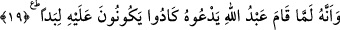

diye bu uzuvlarla secdenin yapılmasına hükmetmiştir.
19. Allah’ın kulu, O’na yalvarmaya (namaza) kalkınca, neredeyse onun etrafında
keçe gibi birbirlerine geçeceklerdi.
“Allah’ın kulu” yâni Peygamber Efendimiz (s.a.) “O’na ibâdete kalkınca”. Bu cümle
de vahyedilen cümlelerdendir. Yâni denmiş oluyor ki: De ki cinlerden bir topluluğun ...
dedikleri ve Allah’ın kulu ona ibâdete kalkınca neredeyse onun etrafında keçe gibi
birbirlerine geçecek oldukları bana vahyolundu.
“Abdullah: Allah’ın kulu” ifâdesiyle Nebiyy-i Ekrem (s.a.) Efendimiz kasdedildiği
için “Abdullah” ismini onun isimleri arasına almışlardır. Çünkü her ne kadar o, “cem’”
hâlindeyken O’nun mazharı ise de “fark” hâlinde İsm-i A’zam’ına izâfe edilen hakîkî kul
idi.
Eserlerde gelmiştir ki Nebiyy-i Ekrem (s.a.) Efendimiz’e hiçbir isim Abdullah
isminden daha güzel gelmemiştir. Zira hiç kimse ibâdet ve ubûdiyeti yerine getirme
husûsunda onun gibi bir kudrete sâhip olamamıştır. Şüphesiz bu isim Rasûlullah (s.a.)
Efendimiz’e, meleklerin menzillerine doğru yükseldiği vakit verilmişti ki “Münezzehtir
O (Hâlik-ı Kudret) ki, kulunu bir gece Mescid-i Haram’dan çevresini mübârek
kıldığımız Mescidi Aksa’ya yürüttü.” (el-İsrâ, 17/1) âyeti gelmiştir. Yine Kur’ân’ın
feleklerin derecelerinden indirilmesi esnâsında kendisine bu isim verilmişti. “Hayır ve
bereketi nihâyetsizdir o zâtın ki, Furkân’ı kulu üzerine indirdi.” (el-Furkan, 25/1).
O kul, sevgilinin kulluğunun alâmeti ve nişanıdır
O bütün kullardan daha makbuldür.
Onun, kulluğuna öyle yol verdiler ki
Bu yolu hiçbir padişah görmemiştir.
Peygamber (s.a.)’in “Abdullah” olarak zikredilmesi, onun kıyâm ve ibâdetinin
gerektirdiği kulluk ve tevâzuuna işâret etmek içindir. Çünkü bu ifâdede sanki Peygamber
Efendimiz (s.a.) kendisinden bahsetmektedir. İfâdenin takdiri şudur: “De ki bana
vahyolundu ki ben namaza kalktığımda cinlerden bir tâife neredeyse etrafımda keçe gibi
birbirlerine geçeceklerdi.” Buraya kadar yaptığımız açıklama âyetin “enne” şeklinde
okunmasına göredir. Buna karşılık kırâat imamlarından Nafi’in ve Ebû Bekr’in
kırâatini esas alırsak o zaman muktezâya/kıyâma ve ibâdete işâret ettiği anlaşılır.
Burada Kureyşlilere bir târiz de vardır. Çünkü onlar çocuklarına “Abduvedd”,
“Abduyeğus”, “Abdumenaf”, “Abduşems” vb. isimler veriyorlar ancak “Abdullah”
ismini vermiyorlardı. Gerçi aralarında “Abdullah” ismini verenler var idiyse de bu